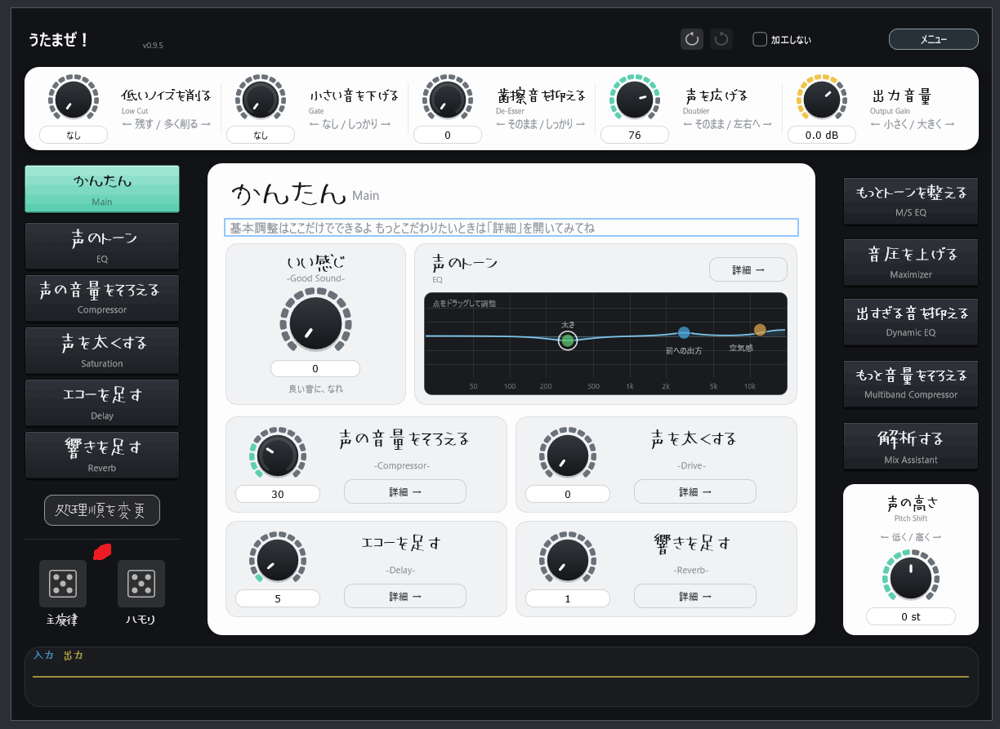

01
かんたん
Easy
基本的な調整は「かんたん」画面から。 声のトーン、音量感、太さ、エコー、響きをまとめて触れます。
歌のMIXを、もっとわかりやすく。
はじめてでも触りやすく、もっとこだわりたいときは細かく調整。 ボーカルMIXに必要な処理を、ひとつのプラグインにまとめています。
※ 現在は公開準備中です。

FEATURES
Easy
基本的な調整は「かんたん」画面から。 声のトーン、音量感、太さ、エコー、響きをまとめて触れます。
Detailed Controls
Compressor、EQ、Saturation、Delay、Reverbなどを個別に調整。 「かんたん」だけでは足りないところまで追い込めます。
Mix Assistant
ボーカルとオケのバランスを見ながら、MIXの判断をサポートする解析機能を用意しています。
MODULES
FREE / PRO
FREE
PRO
※ PROの価格・販売方法・ライセンス仕様は現在調整中です。
SYSTEM
正式な対応環境はリリース時に確定します。
UPDATE
リリース後は、このページで最新版と更新内容を案内します。 プラグイン内からのアップデート確認にも対応予定です。